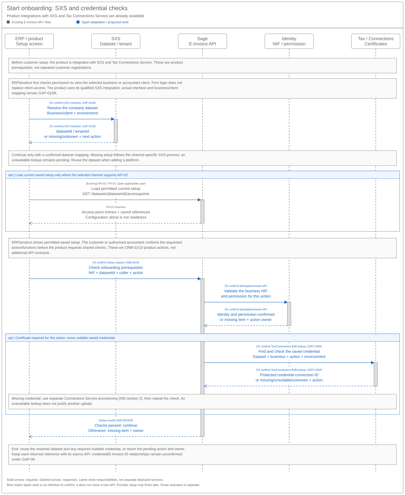
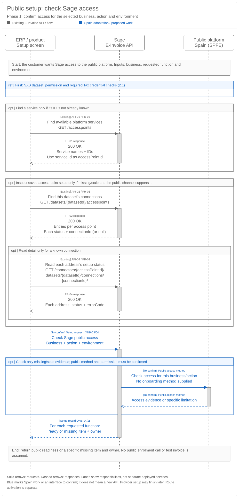
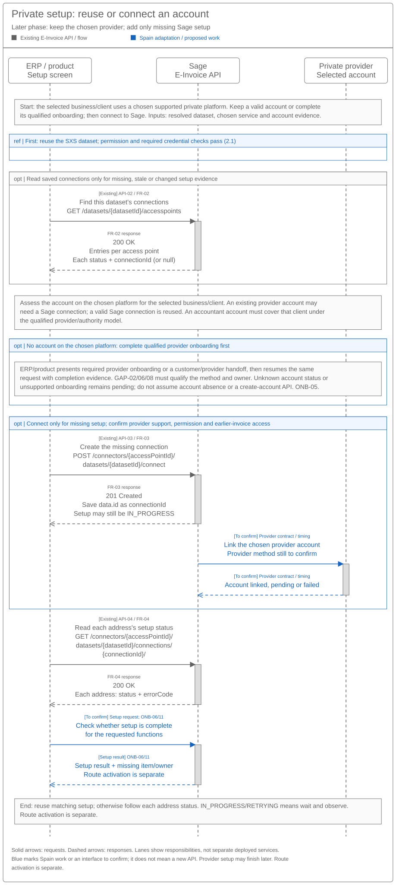
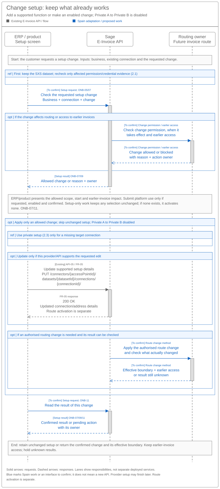

Draft review. Settings interaction is intended behaviour; supported actions and implementation still need qualification. No publication performed.
Customer Onboarding and Connectivity Sequence and Reuse Assessment
Summary — 037 · Customer paths — 038 · API and field changes — 040
Products: Sage 50, Sage 200, Sage Active and Sage X3 are the ERP products; Despachos is the accountant product. Each must meet the SXS and Tax integration precondition before enabling e-invoicing. SXS manages the product's datasetId / tenantId.
Revision overview — Phases 1–3
This view combines SPEC-SEI-021 and SPEC-SEI-036. It owns sequences, product impact and GAP decisions; 040 owns request/response examples. API/GAP IDs and predecessors are unchanged.
1 Engineering direction — Phases 1–3
What: set up Sage access to the customer's selected e-invoicing platform. Why: reuse valid setup without repeated registration or an unintended provider change.
Phase coverage: 1 — SPFE public solution; 2 — external private providers; 3 — Sage private-platform offering. Labels show analysis coverage, not delivery approval or confirmed API availability. REF-PHASE.
What exists: the shared E-Invoice API can list services, find connections, connect, read status and update supported details. Proposal: reuse these calls and the Tax certificate capability. Add Spain rules and provider support where needed. The supplied contracts establish API behaviour; they do not prove a Spain implementation is ready. FR-01–05; REF-TRUST.
Private A to Private B stays disabled. 038 owns customer scenarios and functional behaviour. Invoice execution and transformation stay in their owning features; existing DTS remains the preferred transformation candidate there, subject to implementation checks.
2 Open engineering decisions — Phases 1–3
This is the authoritative GAP-01–08 register for 037–040. Owners must supply the required evidence before the affected path is enabled.
3 Proposed reuse sequences — Phases 1–3
Grey: existing calls. Blue: proposed Spain work. Red: open questions, uncertainty or assumptions requiring validation. Arrows show requests/responses; lanes show responsibilities. Keep returned datasetId, accessPointId and connectionId; never derive them from NIF. Diagrams do not establish deployments or production readiness.
3.1 Shared prerequisites — Phases 1–3
Start after the product has integrated SXS and Tax certificate management / Connections Service, as required by 038 §4. For each company, resolve its SXS dataset/client mapping first. If confirmed missing, complete qualified channel/SXS setup before dataset-scoped calls; an unavailable lookup remains pending. Then check NIF, permission and any required credential. Keep each credential/connection reference with its source API; their ID relationship remains unconfirmed under GAP-06. Provision only a genuinely missing credential through 040 §2. The diagram proposes the call order, not new SXS or B2B Tax contracts. GAP-01/03/06; REF-INTEGRATION; REF-TRUST; INT-CERT01–03; SPFE-S02.
Existing API-02 returns access-point entries with connection references. INT-AP01–06 describe one connection per datasetId / accessPointId pair and several addresses inside a connection. The 040 API-02 Spain mapping is an unvalidated BA hypothesis; GAP-02 owns the decision. Keep service-returned IDs; do not assume one access point or connection equals one platform. Public/private coexistence remains subject to implementation evidence under GAP-01/02/06. A saved connection does not activate a route. FR-02; INT-AP01–06; REF-CONNECTIONS.

3.2 Public readiness — Phase 1; reused in Phases 2–3

For ONB-S02, reuse saved setup and check access for the selected public function under 038 ONB-04. CONNECTED does not prove public access. /connect is a Sage setup call, not an evidenced SPFE enrolment call. 040 §3 records the unconfirmed product interface; SPEC011 owns public transport rules. SPFE-S03/S08/S16.
What the nine WSDLs cover. The manifest selects the reviewed local PRE release of 29 October 2026. None defines customer enrolment, NIF/census verification, mandate creation, certificate upload or an onboarding-status operation. The table maps these invoice operations to their owning feature; it does not add them to the onboarding sequence. Business purposes come from SPFE-S03 §§6.2–6.10; exact operation names and ports come from SPFE-S10–S17/S23.
Access evidence and remaining gap. Each WSDL defines alternative certificate and electronic-seal ports. Use the exact port for the selected credential class and environment; certificate access does not prove authority for the represented business. There is no dedicated health/readiness operation in this bundle. GetInvoices and GetRegisteredInvoice have operation-specific roles and authority limits; neither is a confirmed onboarding probe. A successful authorised query can evidence that query's access only. An empty query result does not prove missing registration or permission for submission, download or reporting. SPFE-S03 §§4.3/6.4/6.5; SPFE-S10–S17/S23.
Under GAP-05/06, Public Integration and API owners must confirm the permitted check or other evidence for each requested function, credential/authority binding, result meaning and safe failure handling. AEAT liaison must confirm environment access. Until then, ONB-04 keeps the affected result unconfirmed with an action owner. Do not invent an AEAT method or make PRE validation a mandatory customer step. SPFE-S03 §6.10; proposed qualification control.
Reuse boundary. Reuse the shared scoped-readiness pattern and assess the actual SPEC011 client build. Keep Spain operation names, ports, authority rules and SOAP profile in the Spain binding. The eight invoice-operation WSDLs use SOAP 1.2 with ebMS headers and MIME attachments; ValidationInvoice uses direct Invoice/DocumentStatus SOAP bodies. Its two UBL schema imports remain missing under SPFE-Q04/Q05. SPEC011 PCN-SPFE-R01–04/A01–04 own transport and client qualification; this inventory does not establish implemented coverage. SPFE-S10–S17/S23.
3.3 Private setup — Phases 2–3

For ONB-S03, find the service and connection (API-01/02). Reuse valid setup; connect only if missing (API-03), then read progress (API-04). Check permission and routing effects first. A connected address does not activate a route.
The Phase 2 portfolio names B2B Router, Banqup (Unifiedpost), EDICOM, SERES (Docaposte) and ZeroComa. 040 also records Sovos as a new candidate from the Confluence review. Names do not prove Spain integration readiness; provider services, contracts and inputs remain GAP-02/06. REF-PROVIDERS.
The unlisted-provider decision is in 038 §3.2; the separate interconnection duty is in its operator handoff. Sage's operator role requires the PRD221 checks; customer connection success is insufficient.
3.4 Supported change — Phases 2–3, enabled changes only
The complete customer switch journey belongs to SPEC038. This section assesses its setup/API steps. Apply SPEC032 where old access or services end, within the same request. SPEC014 — Routing controls owns the effective routing change; do not create another switch process here.

Change routing or platform — ONB-S05/S06: read existing setup first. If the chosen Spain model exposes another platform as a different accessPointId, API-03 is the candidate for its missing dataset connection (§3.3). Other mappings require contract assessment under GAP-02. Within an existing connection, API-05 adds an address (add) or changes address dates (update), including both in one request. Confirm Spain address/grouping rules and public access-point representation. Separately authorise the routing change and confirm its effective start and earlier-invoice access. SPEC014 — Routing controls owns those controls. Private A to Private B stays disabled; PUT does not establish a general migration or rollback.
3.5 Uncertainty and recovery — Phases 1–3
Read the original connection before repeating an uncertain request. A failed or empty read does not prove no effect. While an address is RETRYING, observe it rather than submitting another connect. Keep unresolved work pending with an owner. INT-AP05/06. Recovery sequence.
3.6 Existing API and capability reuse — Phases 1–3
API links open 040's examples. §2 owns GAP decisions and evidence gates.
Disconnection belongs to offboarding. Do not delete/recreate a connection to repair an unknown result. Keep one product-facing API direction under SPEC013; provider integration mode remains an architecture decision.
3.7 Who sends what and what comes back — Phases 1–3
Existing uses supplied fields. Proposed identifies information needed, not an approved contract. Products call the Domain Service; its selected integration handles platform calls.
4 Scenario variations — Phases 1–3
038's scenario table owns ONB-S01–08. Use the paths above; add approval, recovery or accountant batches where required.
5 Acceptance coverage — Phases 1–3
Use 038's release checks and API-A01–16. Check contract compatibility, returned-ID handling under the selected GAP-02 model, independent credentials/readiness, recovery and client/country isolation. Confirm that Phase 1 SPFE integration does not require an unapproved private-platform model. A connection must not enable the Sage operator role or change another customer's route. These are evidence to obtain, not completed tests.
For ONB-04, obtain these additional checks against the WSDL boundary. These are proposed acceptance controls, not AEAT response contracts.
REF Source references — Phases 1–3